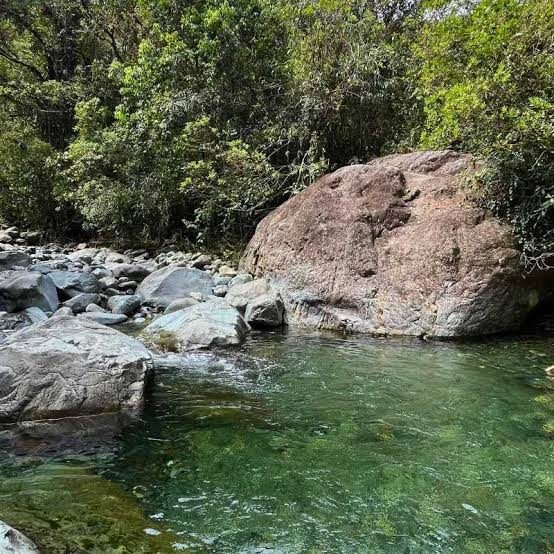
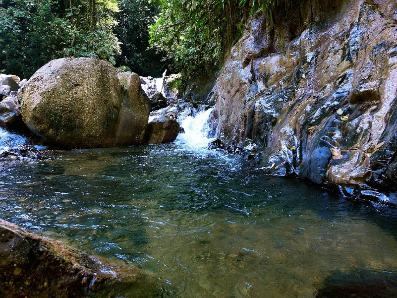
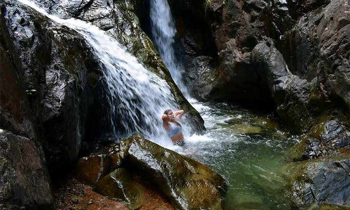
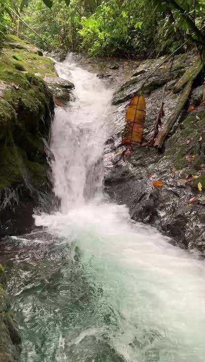
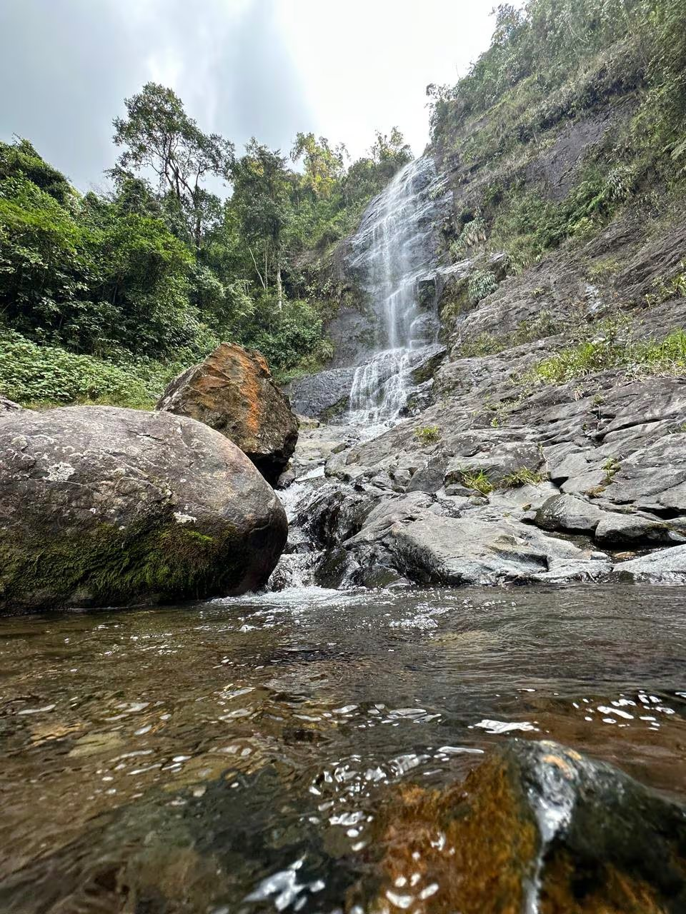
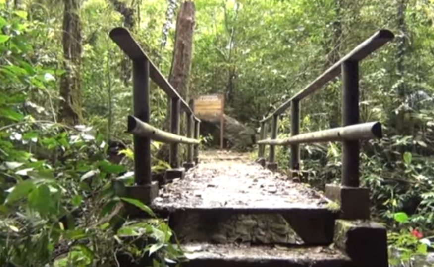
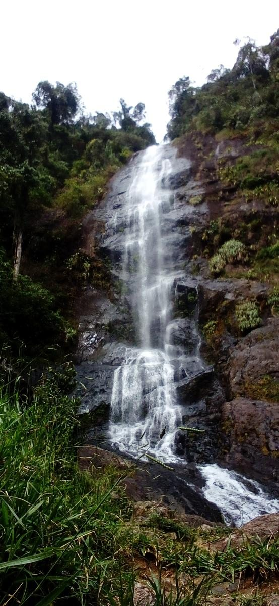
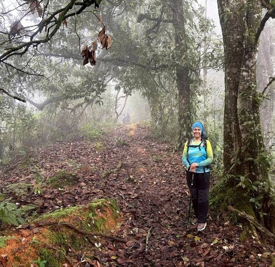
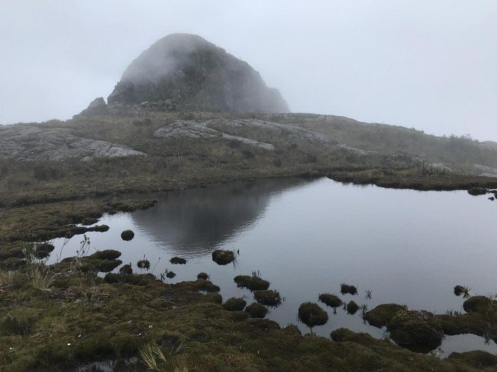

Charco Burbujas
Un remanso de agua entre rocas y vegetación. Confirma acceso y condiciones antes de visitarlo.
Descubre rincones de agua, bosque y montaña, siempre con respeto por el territorio.
← Volver al inicioCharcos, cascadas, senderos y paisajes compartidos por el usuario para ilustrar esta sección.

Un remanso de agua entre rocas y vegetación. Confirma acceso y condiciones antes de visitarlo.

Poza y corriente de agua en un entorno rocoso y boscoso.

Formación rocosa por la que fluye el agua. Evita deslizarte si no está habilitado o si hay riesgo.

Salto de agua y poza natural en un tramo de quebrada.

Recorrido de naturaleza para observar el bosque y el entorno hídrico.

Sendero y puente en un entorno de bosque húmedo.

Cascada de gran altura, presentada con la denominación aportada por el usuario. Verifica el acceso autorizado y las condiciones del lugar.

Ambiente húmedo de montaña, con vegetación abundante y condiciones cambiantes.

Paisaje de alta montaña en la cumbre. Ruta exigente que requiere planificación y orientación especializada.